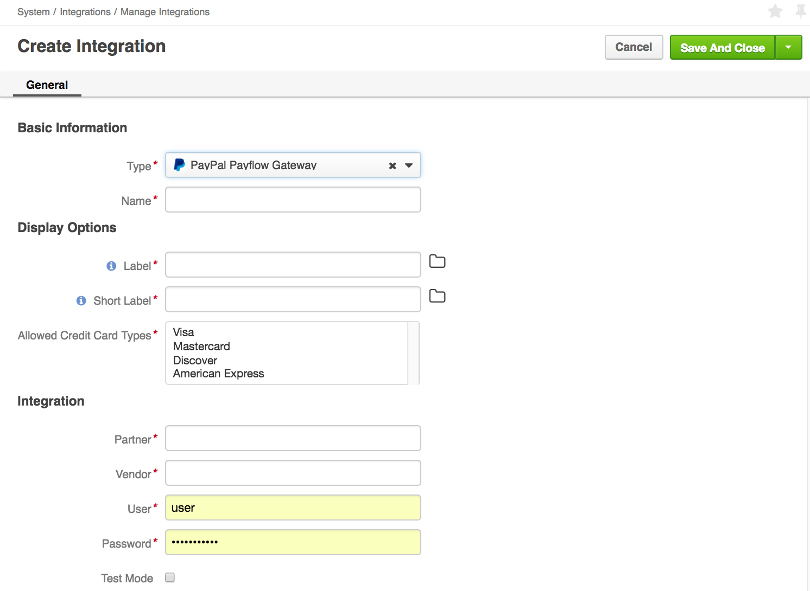
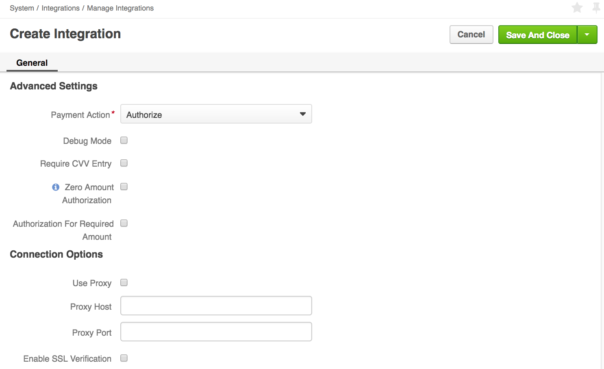
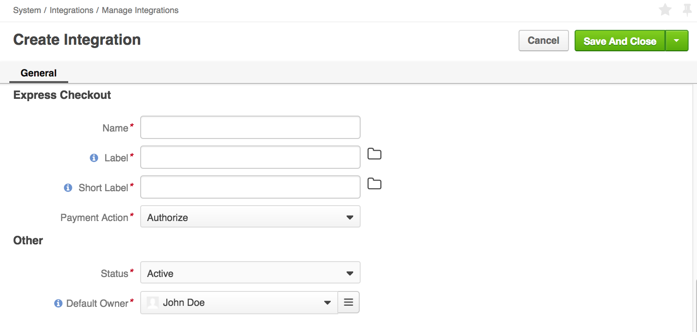

PayPal Payflow Gateway / PayPal Payment Pro Payment Methods Integration
This section describes the steps that are necessary to expose either PayPal Payflow Gateway and PayPal Payflow Gateway Express Checkout or PayPal Payments Pro and PayPal Payments Pro Express Checkout as payment methods for OroCommerce orders and quotes.
Note
Integration steps for PayPal Payments Pro and PayPal Payflow Gateway are exactly the same. The only difference is the integration type that indicates the way OroCommerce shall treat the integration.
To enable PayPal Payflow Gateway or PayPal Payment Pro payments:
Navigate to System > Integrations > Manage Integrations in the main menu. The Manage Integrations pages opens.
Click Create Integration and select either PayPal Payflow Gateway or PayPal Payment Pro as integration type.
Type in Common Integration Details:
Note
- In Basic Information and Display Options, provide name, label and short label for the PayPal Payflow Gateway/PayPal Payment Pro method.
- In the Express Checkout section, provide different name, label and short label to identify the PayPal Payflow Gateway/PayPal Payment Pro Express Checkout method.
Name—The payment method name that is shown as an option for payment configuration in the OroCommerce Management Console.
Label—The payment method name/label that is shown as a payment option for the buyer in the OroCommerce Store Front during the checkout. It may not include the payment processor name if you want to hide it from the buyers. For example, you can enter ‘Credit Card Payments’ if you have a single payment method configured for processing credit cards.
Click the Translations icon to provide spelling for different languages. Click the Default Language icon to return to the single-language view.
Short label—The payment method name/label that is shown in the order details in the OroCommerce Management Console and Front Store after the order is submitted.
Click the Translations icon to provide spelling for different languages. Click the Default Language icon to return to the single-language view.
Status—Set the status to Active to enable the integration.
Default Owner—A user who is responsible for this integration and manages it.
Fill in the PayPal Specific Integration Details:
- Basic Information and Display Options:
- Common Payment Integration Details (name, label, and short label) for the ordinary PayPal payment.
- Allowed Credit Card Types – Select one or more items from the list of the credit card types. Supported types are Visa, Mastercard, Discover, American Express. Press and hold Ctrl/Shift and click on the items to select.
- Integration settings:
- Advanced Settings:
- Payment Actions (Authorize or Authorize and Charge) for the ordinary PayPal payment.
- Debug Mode - when enabled, the PayPal includes more detailed information in the response. This mode may be helpful when troubleshooting payment-related issues.
- Require CVV Entry - when enabled, the buyer is prompted to enter their credit card CVV. When enabled, the CVV is verified during payment authorization by the payment processor.
- Zero Amount Authorization - enables Zero Amount authorization request - a transaction that authorizes further payment with the same payment details. When enabled, the buyer can reuse this payment information for the further orders.
- Authorization for Required Amount - enables blocking the required amount on the buyer’s credit card to ensure that they have sufficient balance to be charged for the order later. This option is valid only when Zero Amount Authorization is enabled and only when Authorize payment action is selected.
- Connection Options:
- Use Proxy - when enabled, any request to the PayPal will be routed through the proxy server using Proxy Host and Proxy Port values provided in the following parameters.
- Proxy Host – the host name or the IP address of the proxy server that routes the requests to and from OroCommerce.
- Proxy Port – the port that is used by the proxy server that routes the requests to and from OroCommerce.
- Enable SSL Verification - when enabled, OroCommerce validates the PayPal certificate in the responses from the PayPal API to secure from the man-in-the-middle attack. If the certificate is not valid, the response is ignored and payment processing fails. It is recommended to keep this option enabled for production and most test deployments. You might need to disable the SSL verification for OroCommerce internal tests with no real PayPal integration (e.g. when you are testing checkout workflow customization).
- Express Checkout:
PayPal Integration Configuration Details. Part 1

PayPal Integration Configuration Details. Part 2

PayPal Integration Configuration Details. Part 3

Click Save.
Next, set up a payment rule that enables these payment methods (PayPal Payflow Gateway and PayPal Payflow Gateway Express Checkout and/or PayPal Payment Pro and PayPal Payment Pro Express Checkout) for all or some customer orders.